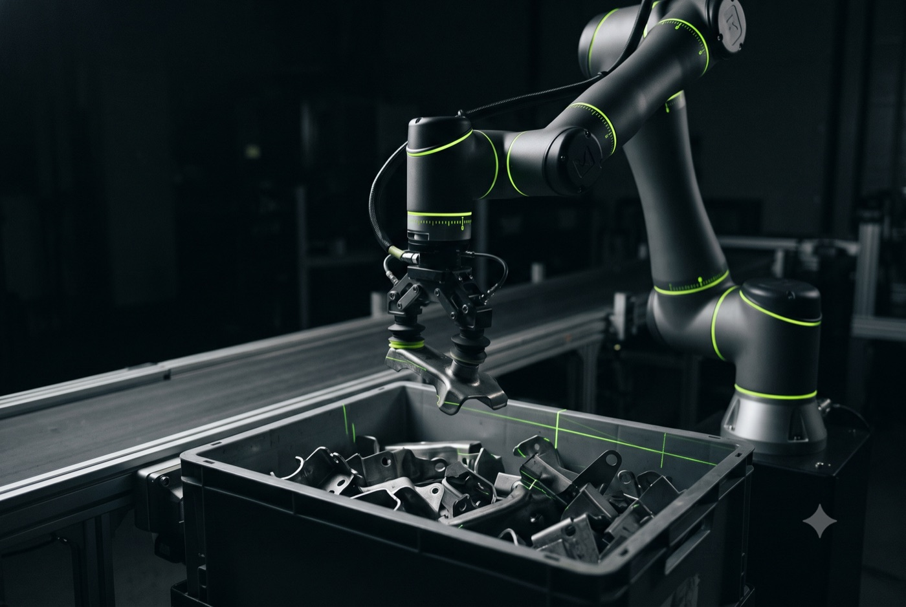

ROS2 Custom Robotic Manipulation
We deploy advanced multi-axis robotic arms driven by reactive software frameworks for applications requiring spatial adaptability and precise positioning.
- ▹ROS2 & MoveIt2 Native Stack — real-time kinematic collision avoidance, dynamic path planning, and unified coordinate frame mappings.
- ▹Bespoke Smart End-Effectors — custom electric, pneumatic, or vacuum grippers outfitted with dynamic pressure and force-torque monitoring.
- ▹Advanced Pick-and-Place — 3D perception pipelines executing unstructured bin picking and part orientation corrections on active conveyors.